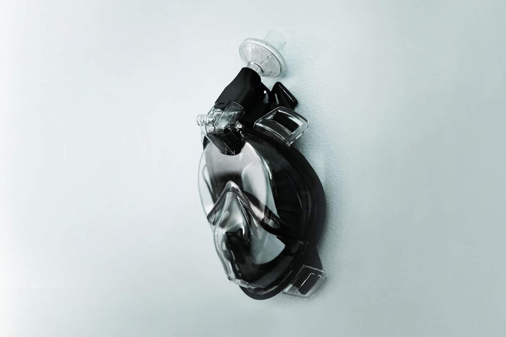

About
Hello! I'm a student at Olin College of Engineering '21, studying computer science and human-centered design. At Olin, I am learning how to learn better, and discovering new ways to affect the world around me. My past experiences involve project management, systems engineering, web development, biomedical research, and design for + with stakeholders.
Career
May - August, 2020
Software Development Engineer Intern
Last summer, I worked remotely for Microsoft's Autonomous Edge Team, developing a framework for distributed systems. Read more
I primarily worked on developing a command-line interface and React Web UI for visualizing distributed system data and interacting with product APIs. After finishing my main project, I experimented with solutions for dynamically serializing and deserializing Protobuf messages at runtime in Python and Javascript. Throughout the internship, I collaborated across different time zones, and organized shared resources and events among interns and new hires to promote sense of community.
January - December, 2020
IDEO CoLab 2020 Fellow
As part of IDEO CoLab's 2020 fellow cohort, I participated in design thinking workshops, presentations, and networking events.
February, 2020
MakeHarvard Makeathon
My team built a Meloditron that won 1st Place at MakeHarvard! (a hackathon with hardware and electronics)
September, 2019 - Present
Cofounder of Olin PInT
With a grant from the PIT-UN, I co-founded a student-run public interest technology project team at Olin, called PInT. Read more
I co-founded PInT because I am passionate about using my skills to serve my communities, by creating experiential learning opportunities for myself and others to practice asking questions about how technology can both serve and harm the public interest. For the first year of PInT, I managed a student-run consulting clinic, which did pro-bono technical projects with non-profit partners. During this year, I also helped establish a peer:peer teaching skillshare program, design and launch a summer fellowship for 3 students, and hire + onboard a project coordinator employee. PInT's second year involved adapting our programs to meet student needs during the COVID-19 pandemic. Our team has grown from 5 to 60+ students in the past 1.5 years, and we have presented at foundational public interest technology events and conferences.
May - August, 2019
Systems R&D Intern
At Boston Scientific Neuromodulation, I developed an Android app and did systems work in Java, C++, and Matlab. Read more
As a systems R&D engineer, I worked closely with the algorithm code that computes electric potential fields for Boston Scientific's Spinal Cord Stimulator devices. Throughout the summer, I collaborated with another intern to develop an Android app proof of concept that mimicked the functionality of a medical device, then presented this project to various department directors and project stakeholders. During this internship, I also came up with a patent idea with my mentor, added production code to a library, and created a process for porting code from Matlab to Java, using C++ and JNI.
June - August, 2018
Digital Technology Intern
At GE Renewable Energy, I created REST APIs and guided a technical team's transition towards Scrum. Read more
During this internship, I taught myself Java, in order to create a REST APIs to automate a previously manual data transfer process. These APIs ended up saving 3 working hrs/day, 800 hrs /year. I also led a technical team’s transition to working in Scrum, acting as scrum-master, and using agile tools like Rally and Aha! to track progress. Lastly, I designed a front-end proof of concept for a meta data mapping web app using GE’s Predix/Polymer components for the UI.
June - August, 2015+2016
Cancer Biology Research Intern
At Dana Farber Cancer Institute's Zhao lab, I conducted wet-lab experiments, studying the PI3K cell signaling pathway. Read more
I spent two summers (2015 and 2016) at Dana Farber, researching the effects of the PI3K cell signaling pathway on cancer biology. I helped my mentors with literature review, developed hypotheses, and learned how to conduct my own wet-lab experiments involving western blots, cell imaging, qPCR, and RNA sequencing.
-
IEEE ISTAS Conference
I co-wrote a collaborative autoethnography paper, "Care and Liberation in Creating a Student-Led Public Interest Technology Clinic", with the four other founders of PInT. We presented our research at the 2020 IEEE ISTAS conference, and we are submitting it to be published in an IEEE magazine. Read paper -

Pneumask App
I worked with Stanford's Prakash Lab to develop and launch an Android app called Pneumask App, which helps doctors communicate while wearing sound-inhibiting personal protective equipment. The app uses the phone's built-in speakers to amplify a doctor's voice from a Bluetooth microphone inside the mask. Within the app, we also provide safety protocol resources for donning/doffing the masks, created by the Prakash lab. App listing -

Voice-Controlled Laser Battle Bots!
For an 8-week class project, my team of 5 coded an Android app for speech recognition, and built two robots with drive trains, microcontrollers, Bluetooth, lasers, speakers, and sensors. Click the button to learn about our process! Website -

info.olin.build
A 4-week project for the class Products and Markets. After much user research, beta testing, and iteration, my team created an accessible and aesthetic web page that localizes useful Olin information. People in the community are still actively using it today! See the project here. Our Presentation -

Quantitative Engineering Analysis
Click the button below to learn about an applied math and physics project from this double-wide experiential learning class! Art Visualizer -

Pick-up Line Bot
A friendly bot on Tinder and the web that provides relevant pick-up lines to people, and learns from their feedback. This team project involved web-scraping, elementary machine learning, chat bot creation, and web development. The app is hosted on Heroku, so takes a bit to load. Check it out! -

Check, Please
Spring semester of my first year, I co-directed a play! This production was entirely student-led. -

A New Olin Tradition
During my first semester at Olin, I organized a community bonding event for the whole school: students, faculty, and staff carpooled to a theater together and watched Star Wars: the Last Jedi on the day of the premier! Thanks to school funding, the movie and the pizza party afterwards were free. -

Art, Design, and Animation
I've been making art for most of my life, so I like to apply that creativity, aesthetic, and attention to detail to my engineering as well. Check it out!